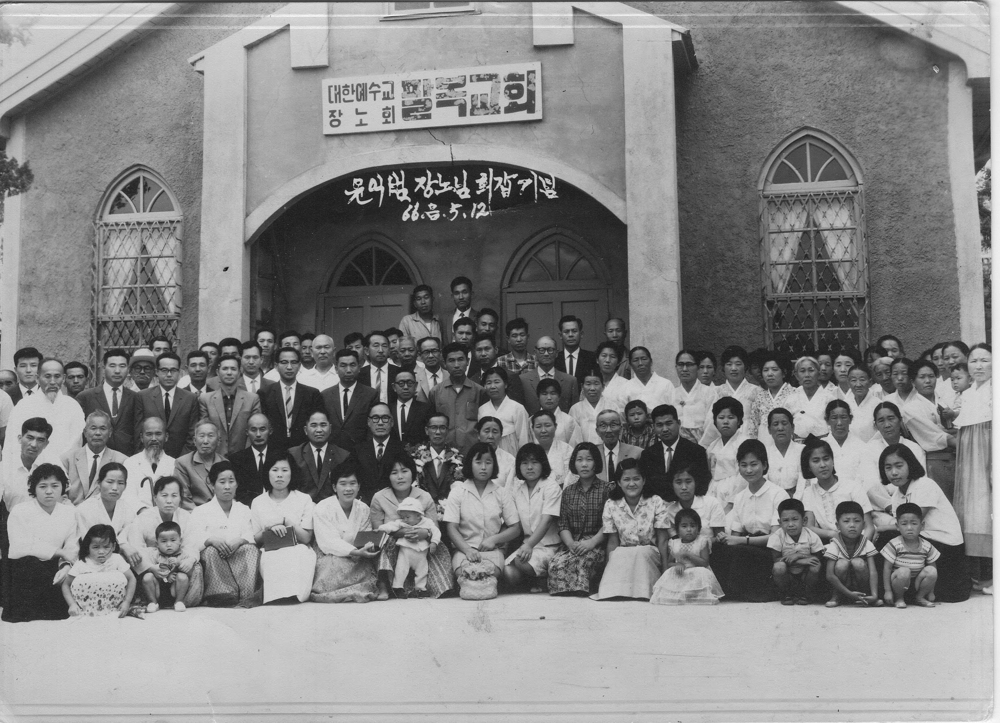

An option on the Robo Taxi that I would like to see: A programmable AI driver with the language of preference.
Learned from my travel days, taxi cab drivers are mobile philosophers, if you ask right questions.
Some comments, by taxi drivers, I recall,
your hearing is more 간사(奸詐, deceitful) than eyes. He was an audiophile
your pronunciation is way too high, please speak with a lower tone.
we don’t leave this open air zoo, because this is where our lives are sustained.
Except for a time in Korea, I would have talked more to drivers, but often language was an issue.
The last comment was made by a driver at a city-state nation. A nation with 4 official languages, and English, was one of them.
As I recall, the way he said it, it was more of resignation rather than appreciation.
Wondered over the years what that driver meant by open-air zoo and why he chose to stay, if he felt that his freedom was limited.
Unlike that Taxi Driver, who had an option to stay or go,
My parents never had that option or freedom.
They were born into a nation in political bandage, a nation under forced occupation
For my mother after a brief taste of liberation, Russia backed regime began a reform.
A transition from occupied nation with limited personal freedom, a Socialism towards a full-scale Communism, with centralized control.
A system that took away economic freedoms, that is, ownership of properties and control of means of producing goods and services – that was allowed and flourished under Japanese occupation.
For my father, he left North and learned the leather trade in the South. When the Japanese left, he became an owner of a house in the 영등포 area of Seoul, previously owned by the manager – at a age of 15.
Ironically he was inducted into the South Korean Army and fought against people from his 고향 (Hometown, in North Korea)1.
-01.jpg)
The aftermath of war meant a reset and a new battle, this time against poverty.
But freedom was preserved for the half of the nation
[For a discussion on my mother’s escape from the North please refer to this entry, link]
After 2 decades of economic struggles under a limited form, an authoritarian democracy, my parents established a home in 부평, 주안 area of Incheon
Those days of scarcity people clung to many forms of religion For us we were Protestant, Presbyterians in particular. It had been chosen by mother’s forefathers and foremothers A spiritual transition then occurred

For my parents, achieving a full measure of all forms of freedom occurred when they moved to America and made their home in Greenbelt, Maryland some 50 years ago.
I never heard them murmur or complain about their new homeland
Only an expression of gratitude for an opportunity to fully engage in a dream, a continuation of a national experiment and personal endurance
Although in their mid 40s they had the energy and hope of much younger persons – fueled by this new chance in a land of freedom
For them, they had hoped for, continued to endure, and eventually found their full freedom.
I, on the other hand, had known only freedoms
I have reaped the fruits of nation of freedom and fierce work ethics of immigrants
What have I done with it?
What will I do going forward?
Less murmuring and more focused effort, both at home and at work
Less comparison and judging of people and nations but more understanding and effort towards principles of Lincoln. A government of, by and for people. Especially for the people of North Korea
Less attachment and reliance, to materials and on comfort.
Model simple, frugal living of my parent’s generation.
Provide means and ways for younger generations to succeed as participants in this continuing experiment of representative/participatory government and economy.

My parents chose a religion, a nation, a way living for me and my siblings
Whether those choices led to an open or closed zoo, or no zoo is up to me.
I choose to continue in the spirit of newly arriving immigrant and a convert.
Remembering sacrifices and martyrs that enabled freedom of religion and established a unique form of government
Remembering the sacrifice of my parents.
So that I can say with conviction that I did not bury the tradition (talents) you left us.
Thank you Mom and Dad